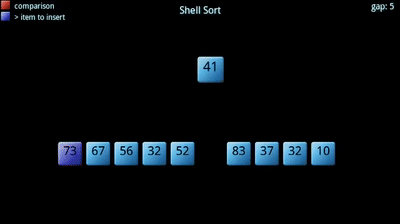

defbubbleSort(arr): for i inrange(1, len(arr)): for j inrange(0, len(arr)-i): if arr[j] > arr[j+1]: arr[j], arr[j + 1] = arr[j + 1], arr[j] return arr
2. 选择排序
1 2 3 4 5 6 7 8 9 10 11
defselectionSort(arr): for i inrange(len(arr) - 1): # 记录最小数的索引 minIndex = i for j inrange(i + 1, len(arr)): if arr[j] < arr[minIndex]: minIndex = j # i 不是最小数时，将 i 和最小数进行交换 if i != minIndex: arr[i], arr[minIndex] = arr[minIndex], arr[i] return arr
3. 插入排序
1 2 3 4 5 6 7 8 9
definsertionSort(arr): for i inrange(len(arr)): preIndex = i-1 current = arr[i] while preIndex >= 0and arr[preIndex] > current: arr[preIndex+1] = arr[preIndex] preIndex-=1 arr[preIndex+1] = current return arr
4. 希尔排序

1 2 3 4 5 6 7 8 9 10 11 12 13 14 15
defshellSort(arr): import math gap=1 while(gap < len(arr)/3): gap = gap*3+1 while gap > 0: for i inrange(gap,len(arr)): temp = arr[i] j = i-gap while j >=0and arr[j] > temp: arr[j+gap]=arr[j] j-=gap arr[j+gap] = temp gap = math.floor(gap/3) return arr
defmergeSort(arr): import math if(len(arr)<2): return arr middle = math.floor(len(arr)/2) left, right = arr[0:middle], arr[middle:] return merge(mergeSort(left), mergeSort(right))
defmerge(left,right): result = [] while left and right: if left[0] <= right[0]: result.append(left.pop(0)); else: result.append(right.pop(0)); while left: result.append(left.pop(0)); while right: result.append(right.pop(0)); return result
#这里给出快排的单边循环法 defquickSort(arr, left=None, right=None): left = 0ifnotisinstance(left,(int, float)) else left right = len(arr)-1ifnotisinstance(right,(int, float)) else right if left < right: partitionIndex = partition(arr, left, right) quickSort(arr, left, partitionIndex-1) quickSort(arr, partitionIndex+1, right) return arr
defpartition(arr, left, right): pivot = left index = pivot+1 i = index while i <= right: if arr[i] < arr[pivot]: swap(arr, i, index) index+=1 i+=1 swap(arr,pivot,index-1) return index-1
defswap(arr, i, j): arr[i], arr[j] = arr[j], arr[i]
defbuildMaxHeap(arr): import math for i inrange(math.floor(len(arr)/2),-1,-1): heapify(arr,i)
defheapify(arr, i): left = 2*i+1 right = 2*i+2 largest = i if left < arrLen and arr[left] > arr[largest]: largest = left if right < arrLen and arr[right] > arr[largest]: largest = right
if largest != i: swap(arr, i, largest) heapify(arr, largest)
defswap(arr, i, j): arr[i], arr[j] = arr[j], arr[i]
defheapSort(arr): global arrLen arrLen = len(arr) buildMaxHeap(arr) for i inrange(len(arr)-1,0,-1): swap(arr,0,i) arrLen -=1 heapify(arr, 0) return arr
8. 计数排序
1 2 3 4 5 6 7 8 9 10 11 12 13 14 15
defcountingSort(arr, maxValue): bucketLen = maxValue+1 bucket = [0]*bucketLen sortedIndex =0 arrLen = len(arr) for i inrange(arrLen): ifnot bucket[arr[i]]: bucket[arr[i]]=0 bucket[arr[i]]+=1 for j inrange(bucketLen): while bucket[j]>0: arr[sortedIndex] = j sortedIndex+=1 bucket[j]-=1 return arr
defradix(arr): digit = 0 max_digit = 1 max_value = max(arr) #找出列表中最大的位数 while10**max_digit < max_value: max_digit = max_digit + 1 while digit < max_digit: temp = [[] for i inrange(10)] for i in arr: #求出每一个元素的个、十、百位的值 t = int((i/10**digit)%10) temp[t].append(i) coll = [] for bucket in temp: for i in bucket: coll.append(i) arr = coll digit = digit + 1